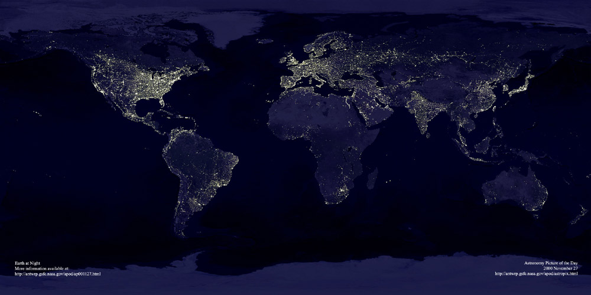

Mouse over the image to see the future!
First and foremost, yes, the energy crisis is real, it’s an issue, and it’s not a small one either. Here's why:
The energy crisis is an issue that affects 1.6 billion people, a number that hasn’t really changed in “absolute terms” since 1970 (Sapiens). This isn’t a challenge that one nation or even one continent faces, it is, as the name suggests, a worldwide issue that is growing increasingly more prevalent. It’s also important to realize and note that this is an issue that is although connected to global climate change, it is an issue that is entirely separate.
Facts don’t lie, and when you boil it down to just the facts, the magnitude of this issue becomes immediately apparent. According to Sapiens, our current pattern of energy use is simply not environmentally plausible, and over-reliance on fossil fuels already has and will continue to have disastrous consequences. Many may immediately turn to renewable energy energy as the solution, however, with more than two billion people by some estimates still lacking access to one or several types of basic energy services (including electricity, clean cooking fuel, and an adequate means of transportation); not only do renewable energy sources lack the raw energy production to be a viable replacement for fossil fuels but providing energy cheaply for these billions of people in developing nations is a far more pressing concern.
Thus, the challenge within developing nations is not only a different issue altogether than for developed nations, but far more complicated. Whereas developed nations are now working towards more sustainable and environmentally sound forms of energy production, developing nations have to first prioritize simply providing energy to the billions of people across the world that still lack basic energy access. Take India for example, a developing nation in which 20% of the population still lacks access to energy (The Guardian). As a result, the energy challenge within developing nations is two-fold: How do you convince cashed-stripped developing nations with millions of people who desperately need basic energy access to transition to far more costly renewable energy production over conventional (and significantly cheaper) fossil fuels? The importance of doing this effectively cannot be stressed enough, as many developing nations are setting up infrastructure for their nations, making the transition to renewable energy is crticial for ensuring a sustainable long-term energy infrastructure.
Map of Global Energy Poverty
Mouse Over the Image to See Another Energy Poverty Map
Although Fossil Fuels are clearly not viable for the future, simply replacing them with alternate forms of energy simply isn't a realistic or frankly even a possibility. Much of the world is still heavily reliant on this type of energy production, which poses a number of issues. While fossil fuels are most well known for their pollution as their main downside, perhaps an even greater (but far less well known) downside of fossil fuels is the sheer inefficiency of the energy generation process. Energy production with coal has an atrocious 33% efficiency rate on average, and this is due to how many conversions energy goes through before finally being able to be harnessed. The basic principle of energy production with fossil fuels is that some combustible is burned producing heat, which in turn heats water and creates steam, from which massive turbines are spun and thus creating energy. This may not sound grossly inefficient, however, at each conversion energy is lost. The burning of coal changes chemical energy to heat energy, the heated water to steam converting thermal to kinetic energy, the steam turning the turbine changes kinetic energy to mechanical, at which point the mechanical energy is finally converted to electrical energy. This then is one of the greatest technological hurdles the world faces today: Much of the world is heavily reliant on fossil fuels, however the sheer inefficiency of fossil fuels continues a major issue that is difficult to solve. However, it is one that I thought about and came up with two possible ideas that would aide this issue. If interested, click the “My Solutions” link at the top.
The U.S. is among the most if not the most developed nation in the world, making it a good example of energy production in highly developed nations. Here’s the breakdown of U.S. Energy Consumption based on statistics pulled from the U.S. Energy Information Administration’s website.
Fossil Fuels account for about roughly 68% of all U.S. Energy Production. Despite being a nation that has poured resources upon resources into helping remove fossil fuels, ⅔ of U.S. Energy still comes from Fossil Fuels. Here’s the breakdown on how it’s split between various fossil fuels:
In comparison, renewable energy, even in a highly developed nation such as the U.S. is only at about 15%. The remaining 20% actually comes from Nuclear Energy. Here’s the split for renewable:
All that money on spent on energy didn't just go to renewable however, it also went to fossil fuels, more specifically increasing fossil fuel efficiency. The U.S. has among the most efficient plants in the world, however, the methods by which this is achieved is unfortunately classified for the most part due to financial and patent-related reasons. One innovation I found was that many plants now use variable speed drives along with much higher efficiency motors to help save 30 to 60 percent of energy that would normally be used by throttle valves or other guide vanes, two mechanisms by which air and water flow is managed. Even such a small upgrade can have significant effects in the long-term.
Developing nations are actually far more interesting when it comes to energy production in comparison to developed nations. When it comes to renewable energy, developing countries actually outspent rich countries for the first time starting in 2015 (Independent). In fact, developing countries such as China, India, and Brazil spent a staggering 136 billion dollars on renewable energy. In fact, it appears that many (not all) developing nations in general are far, far ahead of richer nations such as the U.K. and the U.S. in terms of renewable energy. In a sudden shift in the historic trend, it appears that renewable energy is gaining major ground as it actually becomes increasingly cost-effective. With developing countries are estimated to consume 65% of the world’s energy by 2040 (The Atlantic), having an ecologically and technologically sustainable and viable form of energy is crucial in helping aide the energy crisis and reducing energy poverty in the future.
In fact, one prime example of this is Costa Rica, a country in which 98% of their power is from renewable energy according to official data (The Guardian). In fact, Costa Rica is a nation that is well on their way to being completely 100% renewable energy, and has done so in the past for 94 consecutive days (The Guardian). Even stereotypically coal-hungry countries such as China have become incredibly invested in Renewable Energy. The Chinese Government has targeted to have 20% of their total energy consumption be renewable by 2030, a rise from their current 11% (The Guardian). In fact, these nations serve as examples for other developing nations, and represent a much more promising future. However, these nations only represent a fraction of developing nations, and in order to truly end and combat the Energy Crisis all nations, developing or not, need to be fully committed to some form of sustainable energy.
Sitting here in Greenwich, easily one of the most wealthy and developed areas in the entirely of the world, the Energy Crisis seems like a far off, exotic issue to which you have no reason to worry or care about. This though, couldn’t be farther from the truth. In fact, it’s because of America’s affluence and development that this issue is one that is perhaps even more important for us than anyone else.
Electricity isn’t a necessity, it’s a creature comfort, yet it has become as essential to our daily lives as something by the likes of food, water, and shelter. In other words, it’s become a necessity, a fact that we are reminded of from time to time when for some reason or another (various natural disasters) we no longer have this comfort (given you don’t have a backup generator). From the smallest things such as the utility of lights, to basic tasks such as cooking food, we have become increasingly reliant on electricity. Electricity is something that is integral to our society without us even realizing it, and it’s because of all this that the sustainability of energy in the future is incredibly relevant to us here in the States. As we become increasingly reliant on electricity, the implications of not having it become proportionally larger. Given the fact that our current energy solution isn’t sustainable in the future, you have every reason to be concerned; for if this crisis isn’t addressed, the consequences of it could be of an apocalyptic magnitude.
My First Idea:
In energy production with fossil fuels, the efficiency of a given plant is measured by the “heart rate”. This is calculated by the amount of energy used by an electrical generator or power plant to generate one kWh. Another important measure of a power plant’s capability is its "net generation," which is the amount of electricity a power plant supplies to power transmission lines connected, or the amount of energy it’s producing factoring in energy costs a plant has to run. This is important, as to produce power, a plant must first put in power to begin with. In fact, the convential power plant utilizes about 7% of its own energy for its own operations. While that may not seem sigificant on the surface, this is actually quite a sigificant amount when put in context to the amount of energy a convential plant is generating to begin with. This is where my first idea comes into play.
According to Charlie Wind, a peer of mine who has spent hours researching the efficiency of solar panels and solar energy in general as an energy source; solar energy is a highly viable method of producing energy, however, doesn’t have the sheer energy production that fossil fuels does for energy production. As a result, my first idea is that solar energy, a energy source that has also according to Mr. Wind become significantly cheaper and more affordable can be used to help offset the energy production costs fossil fuels already has. It would essentially be a solar grid installed outside the plant that would be used to help power the plant's operation. However, it doesn't only have to be solar, other forms of renewable energy such as wind can be used, but wind power tends to be much more costly in comparison to solar. As a cost-effective upgrade to any modern day plant, it will help maintain the massive energy production that only fossil fuels are really capable of in modern times while still making it cleaner and more environmentally sound by increasing efficiency and net generation.
My Second Idea:
As can be seen in this diagram, the primary function of any fossil fuel in energy production is to be a heat source through which steam is produced and then a turbine is spun creating electrical currents. In fact, one of the great inefficiencies of fossil fuel energy production is the sheer number of conversions the energy goes through before finally being able to be utilized. The burning of a fossil fuel changes chemical energy to heat/thermal energy, which is converted to kinetic energy through the creation of steam, and then the steam to turbine converts kinetic energy to mechanical. At each conversion crucial energy is lost.
In order to help combat this issue, I have devised a possible solution again using solar energy that would help reduce the amount of chemical energy, or in other words, fossil fuels, that are being expended. Solar energy is produced with the use of one crucial similarity to fossil fuels: heat. My idea is to create a hybrid method of energy production that can be applied to any existing fossil fuels plant to again help increase efficiency. Since the creation of heat and therefore steam is the key principle behind fossil fuel energy production, I propose using solar panels as another source of heat that could operate in tandem with fossil fuels and boost efficiency (theoretically) by a significant amount. The use of highly thermally conductive metals that run underneath the water and are heated with solar panels is one possible way this hybrid is possible, however, I have not tested this method.